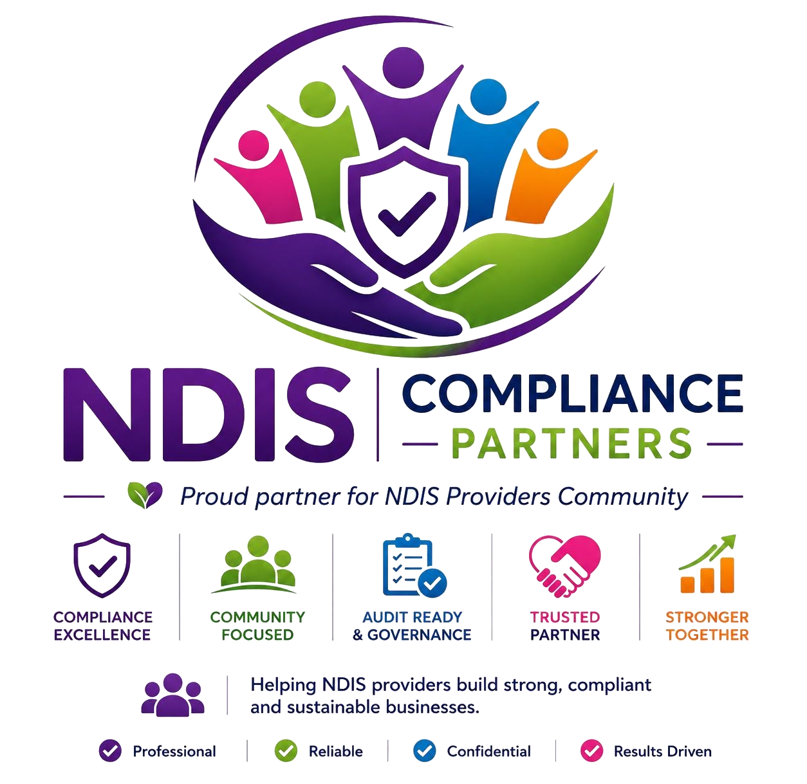

Built specifically for the NDIS provider sector
We don't do generic small-business compliance. Every framework, template and review we produce is written for how disability support providers actually operate.
Why NDIS Compliance Partners exists
The NDIS Practice Standards weren't written with small and medium providers in mind — and generic compliance consultants often don't understand the sector well enough to help. We started NDIS Compliance Partners to close that gap: specialist governance, risk, compliance, finance and business advisory support, delivered by people who understand disability support delivery, not just paperwork.
Today we support providers from first-time registrants through to established multi-service organisations preparing for surveillance audits — plus new operators who need their entire business set up from scratch.

A four-stage engagement, every time
Whether it's a one-off audit prep or an ongoing retainer, every engagement follows the same disciplined process.
Assess
We review your current governance, risk, compliance and finance position against what's actually required.
Plan
You get a clear, prioritised plan — what needs fixing now, what can wait, and what it will cost.
Build
We draft, configure and implement alongside your team, not from a distance.
Sustain
Ongoing check-ins keep your systems current as your services, staff and funding change.
Our values
Participant-first
Compliance exists to protect outcomes for participants — every recommendation is measured against that.
Plain-English advice
No jargon for jargon's sake. If a policy can't be explained simply, it won't be followed.
Partnership, not policing
We work with your team toward compliance — never treating it as a box-ticking inspection.
Let's find out where your provider stands
A free consult is the easiest way to see how we work — no obligation, no jargon.